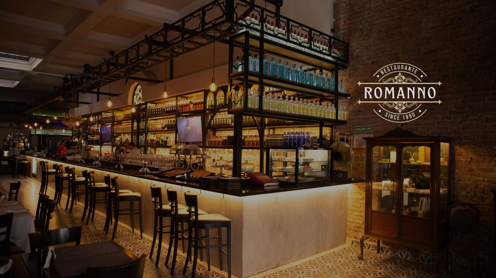
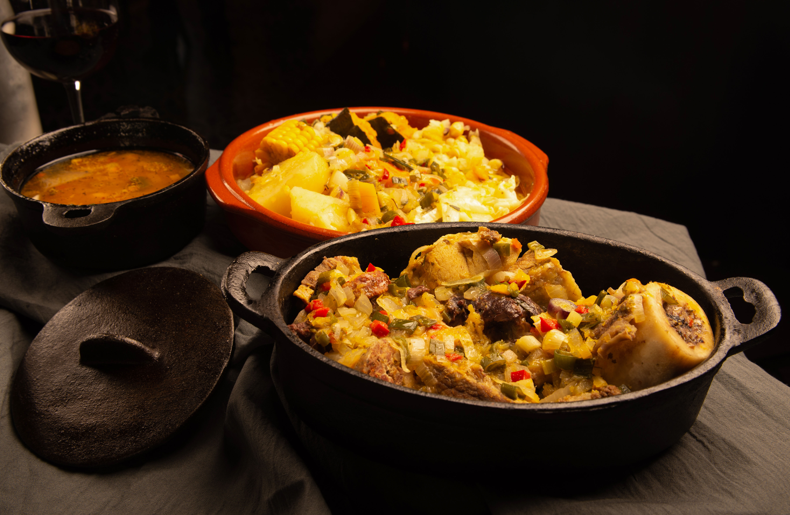
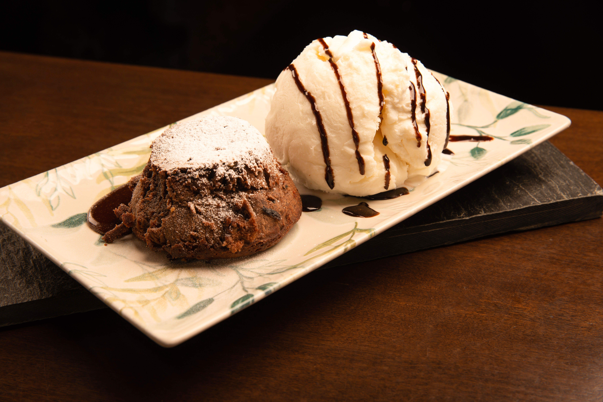

Un clásico de la gastronomía Argentina
En Romanno creemos que la buena cocina es mucho más que una combinación de sabores. Es tradición, dedicación y el placer de compartir una mesa. Nuestra propuesta gastronómica rinde homenaje a los grandes clásicos de la cocina argentina, con platos elaborados con ingredientes seleccionados, recetas que conservan su esencia y una especial atención a cada detalle. Desde un tradicional puchero hasta nuestras especialidades de la casa, cada preparación refleja nuestra pasión por la gastronomía y nuestro compromiso de ofrecer una experiencia auténtica, donde la calidad y el buen sabor son siempre protagonistas.


Desde 1990
Desde 1990, Romanno es mucho más que un restaurante. Es un lugar de encuentro donde las historias se comparten, las celebraciones se disfrutan y los momentos especiales se convierten en recuerdos inolvidables. A lo largo de más de tres décadas, hemos recibido a distintas generaciones de familias, amigos y parejas que nos eligen para disfrutar de una buena mesa en un ambiente cálido y elegante. Nuestra historia se construye día a día, manteniendo viva la esencia que nos acompaña desde nuestros comienzos: la hospitalidad, la atención personalizada y el compromiso de hacer que cada visita sea una experiencia especial. Porque en Romanno, las mejores historias siempre comienzan alrededor de una mesa.